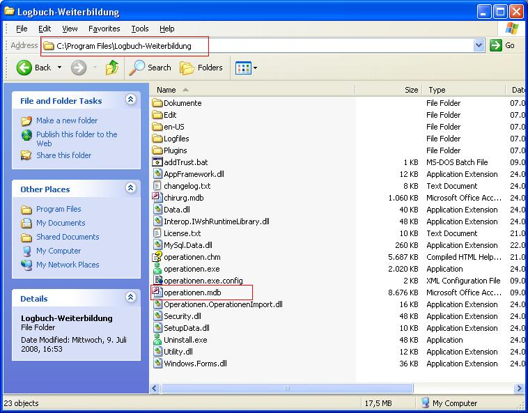

Nachdem ein neuer Benutzer angelegt oder automatisch imporiert wurde, muss dieser unter Extras > Zuordnungen von Benutzern zu Rollen einer Rolle zugeordnet werden. Die Rolle enthält die Rechte, die alle Benutzer erhalten, die dieser Rolle zugeordnet sind.
Lesen Sie hierzu auch Rollen und Rechte.
Ich erhalte folgende Fehlermeldung:

OP-LOG kann Operationen aus einer beliebigen Datenquelle einlesen. Bereits vorhandene Plugins lesen Operationen aus Textdateien in verschiedenen Formaten. Eine genaue Beschreibung finden Sie unter Extras > Datenimport > Ausgeführte Prozeduren importieren.
Das Anfangs-Kennwort ist immer 'start'. Achten Sie hierbei auf die Groß- und Kleinschreibung.
Wenn Sie ihren Anmeldenamen vergessen haben, kann ein anderer Benutzer, der das entsprechende Recht hat, diesen unter "Verwaltung > Operateur-Daten > Bearbeiten" nachsehen.
Wenn Sie ihr Kennwort vergessen haben, kann ein anderer Benutzer, der das entsprechende Recht hat, dieses unter 'Extras > Kennwort eines anderen Benutzers festlegen' neu vergeben.
Die Sicherheitseinstellungen in Windows verhindern, dass Topics in heruntergeladenen .chm Dateien angezeigt werden können. Aus dem Internet heruntergeladenen Dateien werden als nicht vertauenswürdig eingestuft. Wenden Sie daher eine der folgenden Methoden an:
Methode 1
- Doppelklicken Sie auf die CHM-Datei.
- Deaktivieren Sie im Dialogfenster Datei öffnen - Sicherheitswarnung das Kontrollkästchen Vor dem Öffnen dieser Datei immer bestätigen.
- Klicken Sie auf Öffnen.
Methode 2
- Klicken Sie mit der rechten Maustaste auf die CHM-Datei, und klicken Sie danach auf Eigenschaften.
- Klicken Sie auf Zulassen
- Öffnen Sie die CHM-Datei per Doppelklick.
Quelle: http://support.microsoft.com/kb/902225/EN-US/
Laden Sie das Programm herunter und installieren Sie es, falls das noch nicht geschehen ist. Drücken Sie dann F1, um die Hilfe aufzurufen. Lesen Sie unter den FAQ nach, wie es gemacht wird.
Laden Sie das Programm herunter und installieren Sie es, falls das noch nicht geschehen ist. Drücken Sie dann F1, um die Hilfe aufzurufen. Lesen Sie unter den FAQ nach, wie es gemacht wird.
Wenn das Facharztgebiet noch nicht vorhanden ist, müssen Sie dieses unter 'Offizielle Dokumente > Facharzt-Gebiete' zunächst einfügen.
Danach müssen Sie erst die Richtlinien und dann die Zuordnungen von OPS-Kodes zu den Richtlinien einfügen.
Richtlinien können Sie manuell unter 'Offizielle Dokumente > Weiterbildungsrichtlinien' eingeben oder unter 'Extras > Datenimport > Richtlinien importieren Assistent' importieren.
Zuordnungen von OPS-Kodes zu Richtlinien können Sie manuell unter 'Bearbeiten > Zuordnungen von Richtlinien zu Prozeduren' eingeben oder unter 'Extras > Datenimport > Zuordnungen von OPS-Kodes zu Richtlinien importieren Assistent' importieren.
Wenn Sie die Datenbank MSAccess benutzen, sind alle Daten im Datenverzeichnis in der Datei operationen.mdb.
Kopieren Sie diese Datei in ein anderes Verzeichnis, auf einen USB-Stick oder brennen Sie sie auf eine CD.
Anschließend können Sie diese Datei wieder in das Datenverzeichnis kopieren.

Wenn Sie die Datenbanken MS SQLServer oder MySQL benutzen, muss der Datenbankadministrator dafür sorgen, dass die Datenbank gesichert wird.
Um herauszufinden, welche Datenbankversion Sie verwenden, klicken Sie auf 'Hilfe > Über OP-LOG'.
In dem sich nun öffnenden Fenster können Sie alle Informationen entnehmen.

Sie können ein und dasselbe Facharztgebiet gleichzeitig nach verschiedenen Richtlinien (alt und neu) auswerten. Legen Sie das Facharztgebiet einfach doppelt ('Viszeralchirurgie alt' und 'Viszeralchirurgie neu') an und weisen Sie jedem einen eigenen Satz an Richtlinien zu. Jedem Facharztgebiet mit seinen verschiedenen Richtlinien können Sie verschiedene OPS-Kodes zuweisen.
Es macht keinen Unterschied, ob zwei Facharztgebiete verschieden sind (Herzchirurgie, Kinderchirurgie) oder an sich gleich heißen ('Viszeralchirurgie alt' und 'Viszeralchirurgie neu'). In beiden Fällen gibt es eigene (verschiedene) Richtlinien mit eigenen Zuordnungen von OPS-Kodes zu diesen Richtlinien.
Alte Eingriffe können Sie manuell unter 'Bearbeiten > Prozeduren bearbeiten' eingeben und hierbei als 'extern' markieren.
Sie können jede alte Prozedur einzeln eingeben, oder für ein Datum viele auf einmal anlegen, indem Sie als Anzahl statt eins z.B. 50 eingeben.
Sie können Ihre alten Operationen auch gar nicht eingeben und einfach weglassen. Unter 'Bearbeiten > Extern erfüllte Richtzahlen nachtragen' können Sie bereits erfüllte Weiterbildungsrichtlinien direkt eintragen. Diese werden dann zu den Zahlen hinzugezählt, die durch Zuordnungen von Operationen zu Weiterbildungsrichtlinien entstanden sind.